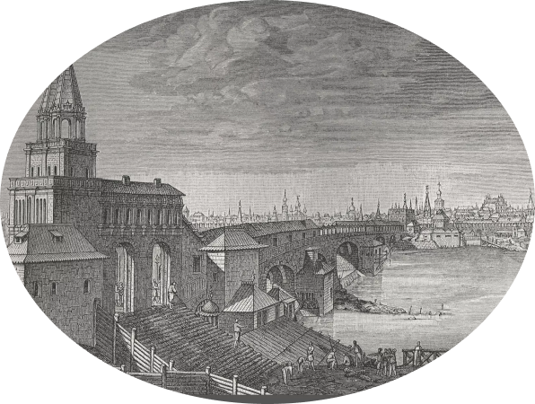

PRATA

— это элегантный шрифт Didone с острыми чертами лица и органическими слезами.
— это элегантный шрифт Didone с острыми чертами лица и органическими слезами.
Шрифт Prata входит в семейство Didone
пример шрифта
История шрифтов Didodne начинается в 18 веке, когда шрифт активно использовался в гравюрах
Шрифт Prata перенял все особенности Didone Он характеризуется:
Основатель Иван Петров хотел создать элегантный и современный шрифт для повсеместного использование
Иван Петров кроме Prata, создал еще 5 шрифтов:

Существует некоторая напряженность в контрасте его с засечками и мягкими изящными изгибами. Его треугольные засечки дополняют и подчеркивают тонкие штрихи, а высокая контрастность означает, что он будет работать лучше всего при размерах дисплея.
Сегодня шрифт Prata популярен в полиграфии
Шрифт Prata подходит для кириллицы
А Б В Г Д Е Ж И К Л М Н О П Р С Т У Ф Х Ц Ч Щ Ь Ъ Ы Я
0123456789
)(*&^%$#@!
Скачать шрифт Prata можно на сайте fonts-online
группа:Б21Д308
Мамедова Гюлан